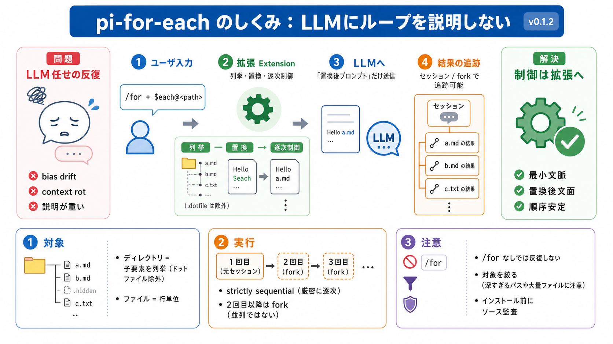

Using Pi · Documentation · Pi
Before the trust decision, pi loads only context files, user/global extensions, and CLI `-e` extensions so they can hand…

Piの拡張「pi-for-each」は、$each@<path> と /for によって、ディレクトリ配下やファイル行を反復処理します。
従来の「LLMに毎回“次もやって”と説明する方式」では、反復が進むほどバイアスの逸脱（bias drift）や文脈劣化（context rot）が起きやすくなります。
pi-for-eachは、ユーザが意図する制御（ディレクトリ反復 / 行反復 / 逐次実行 / セッション分岐）を拡張が担い、LLM側には置換後のプロンプトだけを提示します。
ユーザはプロンプト内に $each@<path> を書き、これを /for コマンドとして実行します。
反復は strictly sequential（厳密に逐次） で、1回目は通常メッセージ、2回目以降は fork（分岐） して直前メッセージを置換します。
$each@<path> の置換ルールは、対象がディレクトリかファイルかで変わります。
READMEの方針は「ループの制御構造をエージェント（LLM）に説明しない」ことです。
$each@ 単体を通常メッセージで送っても、コマンドとして処理されません。
反復は並列ではなく、順序を保つ逐次実行です。
$each@ はファイル/ディレクトリのファジー検索（fuzzy search）と統合されており、パス指定の手間を減らします。
pi-for-eachの拡張は第三者パッケージであり得て、コード実行やエージェント挙動へ影響し得ます。
pi-for-eachは、$each@<path> を /for で実行し、ディレクトリ子要素 or ファイル行を逐次処理します。
Before the trust decision, pi loads only context files, user/global extensions, and CLI `-e` extensions so they can hand…
Biderman, a computational neuroscientist with a background in Israeli naval special operations and a PhD from Chris Ray’…